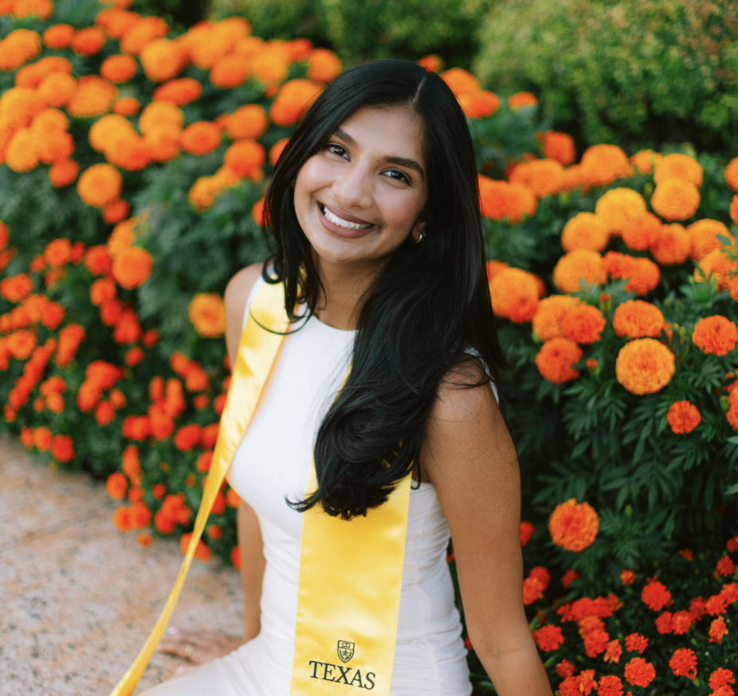
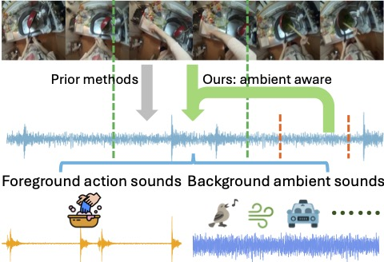
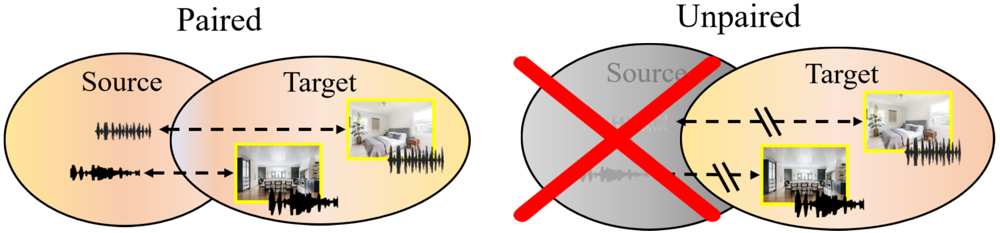

Ami Baid
- Studying computer science + math as a Turing Scholar at UT Austin. I'm graduating in Spring 2026 and starting my Master's in CS at Stanford in the fall🌲
- Undergraduate researcher in the UT Austin Computer Vision Lab, advised by Professor Kristen Grauman.
- I am excited about developing intelligent systems that can understand and reason over information from diverse modalities.
Research
My research focuses on audio-visual multimodal learning, with a focus on reliably leveraging audio while mitigating noise and cross-modal confusion.

Don't Let the Video Speak: Audio-Contrastive Preference Optimization for Audio-Visual Language Models
arXiv 2026 [paper] [project page]

Action2Sound: Ambient-Aware Generation of Action Sounds from Egocentric Videos
ECCV 2024, Oral [paper] [project page]

Self-Supervised Visual-Acoustic Matching
NeurIPS 2023 [paper] [project page]
Internships
- Engineering intern @ Stripe (summer 2025): extended Stripe's LLM-based compliance detection system to support image understanding on merchant websites.
- Software engineering intern @ Salesforce (summer 2024): automated a key workflow in Salesforce's internal Temporal platform and contributed to the open-source Terraform Temporal provider.
Other Projects
- Gaze-centered Egocentric Video Representations: built a gaze-aware preprocessing pipeline that reallocates resolution around gaze, improving efficiency in egocentric video QA. [GitHub]